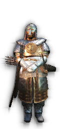
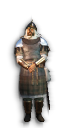
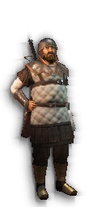

Руководство Bannerlord Twitch Viewer
Bannerlord Twitch (BLT) - это мод интеграции Twitch для Mount & Blade II: Bannerlord.
В качестве зрителя вы можете использовать награды в виде баллов за канал (если они доступны) и команды чата, чтобы взаимодействовать с игрой во время игры стримера.
Основная особенность BLT - это возможность «усыновить» героя в игре, то есть персонаж в игре будет назначен вам с учетом вашего имени Twitch и будет доступен для дальнейшего взаимодействия.
Некоторые примеры того, что вы можете делать со своим героем, включают «вызов» своего героя в битвах, в которых принимает участие стример, участие в турнирах зрителей, обновление снаряжения, выбор класса героев.
Если вы не знаете, с чего начать, начните с использования погашения баллов канала «Принять героя».
Table of Contents
Команды
Награды за баллы канала
Классы
пехота
лучник
тяжёлый лучник
арбалетчик
тяжелый арбалетчик
кавалерия
верблюжья кавалерия
конный лучник
верблюжий лучник
штурмовик
берсерк
мародер
Общая конфигурация
Общий
Боевой
Смерть
Награды за убийство
Награды в конце битвы
XP
Серия убийств
Достижения
Команды
| Командование | Описание | Настройки | ||||||
|---|---|---|---|---|---|---|---|---|
| аукцион | Start an auction on a custom item you own, with a specified reserve price. Other viewers are able to bid upon your item, and the highest bidder will receive it at the end of the auction. Usage is !auction (custom item index) (reserve price), e.g. !auction 3 50000 would start a new auction for your custom item with the index of 3 (as shown by the 'customitems' command), with a reserve price of 50000. |
|||||||
| предложить | Сделайте ставку на текущий аукцион, если он активен. Использование !предложить (сумма золота), например !предложить 100000. Если аукцион не проводится или ставка не превышает резервную цену, она будет отклонена. |
|||||||
| ставка | Используйте это, чтобы делать ставки на турнирные матчи, если они доступны.!ставка (team) (gold) , например !ставка red 10000 чтобы поставить 10000 золота на красное. Выигрыши делятся из всего банка в зависимости от относительного размера ставки.Если ставка сделана только на одну команду, ставки будут возвращены. |
|||||||
| класс | Выбирает новый класс для вашего героя, обновляя имеющееся снаряжение в соответствии с требованиями класса. Используется !класс (название нового класса), например, !класс лучник. |
Уровневые затраты: 1=0⦷, 2=0⦷, 3=0⦷, 4=40000⦷, 5=80000⦷, 5=80000⦷, 6=160000⦷ Бесплатно, если у вас еще нет занятий Обновляет снаряжение для соответствия новому классу |
||||||
| discarditem | Throw away one of your custom items. Usage is !discarditem (custom item index), e.g. !discarditem 3 would discard your custom item with the index 3. The custom item index is shown in the 'customs' command. |
|||||||
| датьпредмет | Give one of your custom items to another viewer. Usage is !giveitem (custom item index) (viewer), e.g. !giveitem 3 C4alad0g would give your custom item with the index 3 to the viewer called C4lad0g. The custom item index is shown in the 'customitems' command. |
|||||||
| hero | Use to adjust hero physical features Usage is !hero (gender) (male/female) Example: !hero gender male |
Enabled Commands: Change Hero Gender Gender Change Config: Price=50000⦷, Only on created heroes?=True |
||||||
| инв | Shows your heroes equipped loadout and inventory, excluding custom items (do !customItems instead) |
Показывает: Золото, Уровень снаряжения, Инвентарь боевого снаряжения |
||||||
| kingdom | Use to manage clan actions Usage is !kingdom (join/rebel/stats) name Example: !kingdom join Aserai or !clan stats |
Enabled Commands: Join, Create, Stats Join Config: Max Clans=, Price=150000⦷, Allow Join Players Kingdom?=False Rebel Config: Price=2500000⦷, Minimum Clan Tier=2 |
||||||
| способности | Показывает ваши доступные способности |
Показывает: Силы |
||||||
| свита | Purchases new retinue troops, or upgrades existing ones to the next tier if you have reached the limit. Retinue will appear with you in battle when you summon, earning you money when they make kills. Usage is !retinue (blank or all for auto upgrade/upgrade amount) Example: !retinue 1 or !retinue all |
Крики: 5 Эффект: 1=25000⦷, 2=75000⦷, 3=250000⦷, 4=500000⦷, 5=1000000⦷, 5=1000000⦷, 6=5000000⦷ Разрешается: Цели, Основные войска, Элитные войска |
||||||
| списоксвиты | Показывает ваши текущие войска свиты. |
Показывает: Список отрядов свиты |
||||||
| стат | Показывает общую информацию о вашем герое, включая клан, золото, местоположение, HP, навыки, атрибуты и свиту. |
Показывает: Атрибуты |
||||||
| атр | атрибуты |
Укажите имя атрибута (или его часть) при вызове этого Количество: 0 к 1 Расходы 150000⦷ |
||||||
| бой | Use this when the streamer enters a battle, to spawn your adopted hero on the enemy side (along with your retinue). |
Бок: Сторона стримера Лечит: 1.0HP в секунду пока вызван Разрешено в: Полевое сражение, Деревенская битва, Осадный бой, Дружеская миссия, Убежище |
||||||
| враг | Против стримера |
Бок: Сторона врага Лечит: 1.0HP в секунду пока вызван Разрешено в: Полевое сражение, Деревенская битва, Осадный бой, Дружеская миссия, Убежище |
||||||
| голда | Показать текущее золото вашего героя. |
Показывает: Золото |
||||||
| дарю100 | ||||||||
| живи | Лечит стримера | |||||||
| именное | You can use this to name your custom items. Usage is !nameitem (custom item index) (name), for example !nameitem 3 Foehammer. The custom item index is shown in the 'customitems' command. |
|||||||
| клан | Use to manage clan actions Usage is !clan (join/create/lead/rename/stats) name Example: !clan join Banu Tammar or !clan stats |
Enabled Commands: Join, Create, Lead, Rename, Stats Join Config: Max Heroes=50, Price=150000⦷, Allow Join Players Clan?=True Create Config: Price=2500000⦷ Lead Config: Price=1000000⦷, Challenge Heroes?=True Rename Config: Price=1000000⦷ |
||||||
| коняМне | создает коня | |||||||
| крафтБроня | ||||||||
| крафтПушка | создает оружие персонажу зрителя | |||||||
| ктоя | Shows the viewers custom item list, which is required so they know what item index to use in the custom item related commands. |
Показывает: Золото, Возраст, Клан, Культура, Здоровье, Навыки выше , Атрибуты, Кол-во и средний ранг свиты, Список отрядов свиты, Достижения, Отслеживаемая статистика, Силы |
||||||
| мочи | ||||||||
| подарок | ||||||||
| сменитьПол | изменения пола героя зрителя |
Enabled Commands: Change Hero Gender Gender Change Config: Price=50000⦷, Only on created heroes?=False |
||||||
| старт | Adopt a randomly selected Hero |
Viewer selects hero by culture Недавно созданный странник Начальный возрастной диапазон: 18 to 35 Стартовое золото: 50000 Наследование: 10% золота потрачено на снаряжение и свиту, до 2 пользовательских предметов Уровень стартового снаряжения: 1 Стартовый класс: лучникСтартовые навыки:
|
||||||
| турнир | Join the tournament queue with your adopted hero. You can see the queue in the overlay. Each tournament can have up to 16 heroes in it, once it is full further heroes will remain in the queue for the next tournament. | |||||||
| уволить |
Only Created Heroes?: False |
|||||||
| фокус |
Навыки: Автоматически, в зависимости от класса, снаряжения и имеющихся навыков. Очки внимания: 0 к 1 Расходы: 50000⦷ |
|||||||
| хил | Heals your hero over time. Only works in battle, when your hero is summoned. | |||||||
| экип | Upgrades your heroes equipment tier, replacing any existing equipment of lower tier, except for custom items. The cost depends on the tier you are trying to upgrade to. Usage is !equip (blank for auto upgrade/tier number) Example: !equip 1 or !equip |
Уровневые затраты: 1=25000⦷, 2=75000⦷, 3=250000⦷, 4=750000⦷, 5=2500000⦷, 6=1000000⦷ |
||||||
| дост | показывает достижения (настаивается в конфиге) |
Показывает: Достижения |
Награды за баллы канала
| Командование | Описание | Настройки |
|---|---|---|
| Дайте игроку золото | Передайте 10,0000 золота персонажу стримеров от своего героя. | |
| Исцелить героя | Лечит вашего героя в течение времени. Работает только в бою, когда ваш герой вызван. | |
| Исцелить стримера | Лечит персонажа стримера в бою, в течении времени. Не работает на карте кампании. | |
| New Reward | ||
| На пенсию моего героя | Используйте это, если вы больше не хотите играть текущим героем. Они будут помечены как (вышедшие из употребления), и вы сможете принять новый. Правила наследования применяются к пенсии так же, как и к смерти. Вы ДОЛЖНЫ ввести «да» в командной строке (точно так, как написано, строчными буквами) для завершения вывода на пенсию. |
Only Created Heroes?: False |
| Турнир | Присоединяйтесь к очереди на турнир со своим приемным героем. Вы можете увидеть очередь в оверлее. В каждом турнире может участвовать до 16 героев, после его заполнения другие герои останутся в очереди на следующий турнир. | |
| Использовать силу класса | Активируйте силу класса на своем герое, если он у вас есть. Сила будет действовать в течение ограниченного периода времени, показанного в оверлее. | |
| враг | Используйте это, когда стример вступает в бой, чтобы вызвать вашего принятого героя на стороне врага (вместе со своей свитой). |
Бок: Сторона врага Лечит: 1.0HP в секунду пока вызван Разрешено в: Полевое сражение, Деревенская битва, Осадный бой, Дружеская миссия, Убежище |
| Добавить очки атрибутов |
Случайный атрибут Количество: 1 Расходы 100000⦷ |
|
| Добавить очки фокуса |
Навыки: Автоматически, в зависимости от класса, снаряжения и имеющихся навыков. Очки внимания: 0 Расходы: 100000⦷ |
|
| КрафтБрони | создает броню персонажу зрителя | |
| КрафтОружия | создает оружие персонажу зрителя | |
| одеть чара |
Уровневые затраты: 1=25000⦷, 2=50000⦷, 3=250000⦷, 4=1000000⦷, 5=5000000⦷, 6=20000000⦷ |
|
| Атрибуты | добавляет атрибуты игроку |
Случайный атрибут Количество: 0 к 1 |
Классы
пехота
Basic foot soldier, the core around which every army is built.
| Уровень 1 | Уровень 2 | Уровень 3 | Уровень 4 | Уровень 5 | Уровень 6 |
|---|---|---|---|---|---|
| Формирование | Дальний бой |
| Снаряжение |
Одноручный меч 
|
Щит |
| Пассивная сила |
Здоровый Здоровый I: 125% HP Атлетик I: Атлетичность: +25 Здоровый II: 150% HP Атлетик II: Атлетичность: +50 Здоровый III: 200% HP Атлетик III: Атлетичность: +100 Раздавить I: 15% Неблокируемого / 15% Раскол Щита |
| Активная сила |
Огненный меч [Огненный Клинок I: Множитель скорости поворота: 115% Рукопашный бой: +25] требует УРОВЕНЬ КЛАССА 1 [Игнорировать броню I: Игнорировать 15% брони] требует УРОВЕНЬ КЛАССА 1 [Огненный клинок II: Множитель скорости поворота: 130% Рукопашный бой: +50] требует УРОВЕНЬ КЛАССА 2 [Игнорировать броню II: Игнорировать 30% брони] требует УРОВЕНЬ КЛАССА 2 [Огненный клинок III: Множитель скорости поворота: 150% Рукопашный бой: +100] требует УРОВЕНЬ КЛАССА 3 [Игнорировать броню III: Игнорировать 60% брони] требует УРОВЕНЬ КЛАССА 3 [Стойкость II: 40% Стойкость] требует УРОВЕНЬ КЛАССА 3 |
лучник
Ranged troop, quick on their feet, can use explosive arrows.
| Уровень 1 | Уровень 2 | Уровень 3 | Уровень 4 | Уровень 5 | Уровень 6 |
|---|---|---|---|---|---|
|  |
| Формирование | Дальний бой |
| Снаряжение |
Лук |
Стрелкы 
|
Стрелкы |
Одноручный топор |
| Пассивная сила |
Флотские ноги Флотские ноги I: Множитель максимальной скорости: 110% Рейнджер I: Частота выстрелов AI: 200% Фактор ожидания перед выстрелом ИИ: 50% Дальний бой: 125% Флотские ноги II: Множитель максимальной скорости: 125% Рейнджер II: Частота выстрелов AI: 200% Фактор ожидания перед выстрелом ИИ: 50% Дальний бой: 150% Флотские ноги III: Множитель максимальной скорости: 150% Рейнджер III: Частота выстрелов AI: 200% Фактор ожидания перед выстрелом ИИ: 50% Дальний бой: 200% Хрупкий I: 50% HP |
| Активная сила |
Взрывные стрелы [Взрывоопасные снаряды 1: 25.0% урона / AoE: 50урона на 3м от Дальний бой] требует УРОВЕНЬ КЛАССА 1 [Взрывоопасные снаряды 2: 50.0% урона / AoE: 75урона на 4м от от Дальний бой] требует УРОВЕНЬ КЛАССА 2 [Взрывоопасные снаряды 3: 50.0% урона / AoE: 100урона на 5м от от Дальний бой] требует УРОВЕНЬ КЛАССА 3 [Взрывоопасные снаряды 4: 50.0% урона / AoE: 100урона на 6м от от Дальний бой] требует УРОВЕНЬ КЛАССА 6+Битвы >= 100 [класс: (Class, (текущий)) |
тяжёлый лучник
Ranged troop, quick on their feet, can use explosive arrows.
| Уровень 1 | Уровень 2 | Уровень 3 | Уровень 4 | Уровень 5 | Уровень 6 |
|---|---|---|---|---|---|
| Формирование | Дальний бой |
| Снаряжение |
Лук 
|
Стрелкы 
|
Стрелкы 
|
Двуручный топор |
| Пассивная сила |
Здоровый Здоровый I: 125% HP Здоровый II: 150% HP Здоровый III: 200% HP |
| Активная сила |
Взрывные стрелы [Взрывоопасные снаряды 1: 25.0% урона / AoE: 50урона на 3м от Дальний бой] требует УРОВЕНЬ КЛАССА 1 [Взрывоопасные снаряды 2: 50.0% урона / AoE: 75урона на 4м от от Дальний бой] требует УРОВЕНЬ КЛАССА 2 [Взрывоопасные снаряды 3: 50.0% урона / AoE: 100урона на 5м от от Дальний бой] требует УРОВЕНЬ КЛАССА 3 |
арбалетчик
Ranged troop that specializes in crossbow, tougher but slower than the archer. Can use exposive bolts
| Уровень 1 | Уровень 2 | Уровень 3 | Уровень 4 | Уровень 5 | Уровень 6 |
|---|---|---|---|---|---|
|  |
| Формирование | Дальний бой |
| Снаряжение |
Арбалет 
|
Болты 
|
Болты |
Одноручный меч |
| Пассивная сила |
Самоисцеление Вампир I: Поглощение 10% нанесенного урона в виде HP. Рейнджер I: Частота выстрелов AI: 200% Фактор ожидания перед выстрелом ИИ: 50% Дальний бой: 125% Вампир II: Поглощение 25% нанесенного урона в виде HP. Рейнджер II: Частота выстрелов AI: 200% Фактор ожидания перед выстрелом ИИ: 50% Дальний бой: 150% Вампир II: Поглощение 25% нанесенного урона в виде HP. Рейнджер III: Частота выстрелов AI: 200% Фактор ожидания перед выстрелом ИИ: 50% Дальний бой: 200% |
| Активная сила |
Тяжелые болты [Тяжелые снаряды I: Добавить: 10% Сбить, 10% Оттолкнуть верховое, 10% Спешиться / 25% Неблокируемого / 25% Прорезания от Дальний бой] требует УРОВЕНЬ КЛАССА 1 [Тяжелые снаряды II: Добавить: 25% Сбить, 25% Оттолкнуть верховое, 25% Спешиться / 50% Неблокируемого / 50% Прорезания / AoE: 25урона на 1м от от Дальний бой] требует УРОВЕНЬ КЛАССА 2 [Тяжелые снаряды III: Добавить: 50% Сбить, 50% Оттолкнуть верховое, 50% Спешиться / 90% Неблокируемого / 90% Прорезания / AoE: 40урона на 1.5м от от Дальний бой] требует УРОВЕНЬ КЛАССА 3 |
тяжелый арбалетчик
Ranged troop that specializes in crossbow, tougher but slower than the archer. Can use exposive bolts
| Уровень 1 | Уровень 2 | Уровень 3 | Уровень 4 | Уровень 5 | Уровень 6 |
|---|---|---|---|---|---|
|  |

|
| Формирование | Дальний бой |
| Снаряжение |
Арбалет |
Болты 
|
Болты 
|
Двуручный меч |
| Пассивная сила |
Здоровый Здоровый I: 125% HP Здоровый II: 150% HP Здоровый III: 200% HP |
| Активная сила |
Взрывные болты [Тяжелые снаряды I: Добавить: 10% Сбить, 10% Оттолкнуть верховое, 10% Спешиться / 25% Неблокируемого / 25% Прорезания от Дальний бой] требует УРОВЕНЬ КЛАССА 1 [Тяжелые снаряды II: Добавить: 25% Сбить, 25% Оттолкнуть верховое, 25% Спешиться / 50% Неблокируемого / 50% Прорезания / AoE: 25урона на 1м от от Дальний бой] требует УРОВЕНЬ КЛАССА 2 [Тяжелые снаряды III: Добавить: 50% Сбить, 50% Оттолкнуть верховое, 50% Спешиться / 90% Неблокируемого / 90% Прорезания / AoE: 40урона на 1.5м от от Дальний бой] требует УРОВЕНЬ КЛАССА 3 |
кавалерия
Mounted troop with a strong horse, capable of doing extra charge damage.
| Уровень 1 | Уровень 2 | Уровень 3 | Уровень 4 | Уровень 5 | Уровень 6 |
|---|---|---|---|---|---|

|
| Формирование | Кавалерия |
| Снаряжение |
Одноручное копье |
Щит 
|
Одноручный меч 
|
| Верховое |
Лошадь |
| Пассивная сила |
Хорошая лошадь Лучший наездник I: Скорость передвижения: 110% Продолжительность достижения максимальной скорости: 90% Броня Торса: +20 (на верховом) Заряд I: Маунт-рывок: урон: 150% Верховая маневренность: 125% (на верховом) Лучший наездник II: Скорость передвижения: 125% Продолжительность достижения максимальной скорости: 75% Броня Торса: +40 (на верховом) Заряд II: Маунт-рывок: урон: 250% Верховая маневренность: 150% (на верховом) Лучший наездник III: Скорость передвижения: 150% Продолжительность достижения максимальной скорости: 50% Броня Торса: +80 (на верховом) Заряд III: Маунт-рывок: урон: 500% Верховая маневренность: 200% (на верховом) |
| Активная сила |
Топтать [Столкновение AoE I: AoE: 25урона на 2м от Столкновение] требует УРОВЕНЬ КЛАССА 1 [Столкновение AoE II: AoE: 50урона на 2м от Столкновение] требует УРОВЕНЬ КЛАССА 2 [Столкновение AoE III: AoE: 100урона на 2м от Столкновение] требует УРОВЕНЬ КЛАССА 3 |
верблюжья кавалерия
Mounted troop with a strong horse, capable of doing extra charge damage.
| Уровень 1 | Уровень 2 | Уровень 3 | Уровень 4 | Уровень 5 | Уровень 6 |
|---|---|---|---|---|---|
| Формирование | Кавалерия |
| Снаряжение |
Одноручное копье 
|
Щит 
|
Одноручная булава |
| Верховое |
Верблюд 
|
| Пассивная сила |
Хороший верблюд Лучший наездник I: Скорость передвижения: 110% Продолжительность достижения максимальной скорости: 90% Броня Торса: +20 (на верховом) Заряд I: Маунт-рывок: урон: 150% Верховая маневренность: 125% (на верховом) Лучший наездник II: Скорость передвижения: 125% Продолжительность достижения максимальной скорости: 75% Броня Торса: +40 (на верховом) Заряд II: Маунт-рывок: урон: 250% Верховая маневренность: 150% (на верховом) Лучший наездник III: Скорость передвижения: 150% Продолжительность достижения максимальной скорости: 50% Броня Торса: +80 (на верховом) Заряд III: Маунт-рывок: урон: 500% Верховая маневренность: 200% (на верховом) |
| Активная сила |
Топтать [Столкновение AoE I: AoE: 25урона на 2м от Столкновение] требует УРОВЕНЬ КЛАССА 1 [Столкновение AoE II: AoE: 50урона на 2м от Столкновение] требует УРОВЕНЬ КЛАССА 2 [Столкновение AoE III: AoE: 100урона на 2м от Столкновение] требует УРОВЕНЬ КЛАССА 3 |
конный лучник
Mounted ranged unit, with a good horse, that can use exposive arrows.
| Уровень 1 | Уровень 2 | Уровень 3 | Уровень 4 | Уровень 5 | Уровень 6 |
|---|---|---|---|---|---|

|

|
| Формирование | Конный лучник |
| Снаряжение |
Лук 
|
Стрелкы 
|
Стрелкы 
|
Одноручный меч 
|
| Верховое |
Лошадь 
|
| Пассивная сила |
Верховая стрельба из лукаа Рейнджер I: Частота выстрелов AI: 200% Фактор ожидания перед выстрелом ИИ: 50% Дальний бой: 125% Лучший наездник I: Скорость передвижения: 110% Продолжительность достижения максимальной скорости: 90% Броня Торса: +20 (на верховом) Рейнджер II: Частота выстрелов AI: 200% Фактор ожидания перед выстрелом ИИ: 50% Дальний бой: 150% Лучший наездник II: Скорость передвижения: 125% Продолжительность достижения максимальной скорости: 75% Броня Торса: +40 (на верховом) Рейнджер III: Частота выстрелов AI: 200% Фактор ожидания перед выстрелом ИИ: 50% Дальний бой: 200% Лучший наездник III: Скорость передвижения: 150% Продолжительность достижения максимальной скорости: 50% Броня Торса: +80 (на верховом) |
| Активная сила |
Взрывные стрелы [Взрывоопасные снаряды 1: 25.0% урона / AoE: 50урона на 3м от Дальний бой] требует УРОВЕНЬ КЛАССА 1 [Взрывоопасные снаряды 2: 50.0% урона / AoE: 75урона на 4м от от Дальний бой] требует УРОВЕНЬ КЛАССА 2 [Взрывоопасные снаряды 3: 50.0% урона / AoE: 100урона на 5м от от Дальний бой] требует УРОВЕНЬ КЛАССА 3 |
верблюжий лучник
Mounted ranged unit on a good camel, wielding a glaive. Can use exposive arrows.
| Уровень 1 | Уровень 2 | Уровень 3 | Уровень 4 | Уровень 5 | Уровень 6 |
|---|---|---|---|---|---|
| Формирование | Конный лучник |
| Снаряжение |
Лук 
|
Стрелкы 
|
Стрелкы 
|
Двуручная древковое |
| Верховое |
Верблюд |
| Пассивная сила |
Верховая стрельба из лука Рейнджер I: Частота выстрелов AI: 200% Фактор ожидания перед выстрелом ИИ: 50% Дальний бой: 125% Лучший наездник I: Скорость передвижения: 110% Продолжительность достижения максимальной скорости: 90% Броня Торса: +20 (на верховом) Лучший наездник II: Скорость передвижения: 125% Продолжительность достижения максимальной скорости: 75% Броня Торса: +40 (на верховом) Рейнджер II: Частота выстрелов AI: 200% Фактор ожидания перед выстрелом ИИ: 50% Дальний бой: 150% Лучший наездник III: Скорость передвижения: 150% Продолжительность достижения максимальной скорости: 50% Броня Торса: +80 (на верховом) Рейнджер III: Частота выстрелов AI: 200% Фактор ожидания перед выстрелом ИИ: 50% Дальний бой: 200% |
| Активная сила |
Тяжелые стрелы [Тяжелые снаряды I: Добавить: 10% Сбить, 10% Оттолкнуть верховое, 10% Спешиться / 25% Неблокируемого / 25% Прорезания от Дальний бой] требует УРОВЕНЬ КЛАССА 1 [Тяжелые снаряды II: Добавить: 25% Сбить, 25% Оттолкнуть верховое, 25% Спешиться / 50% Неблокируемого / 50% Прорезания / AoE: 25урона на 1м от от Дальний бой] требует УРОВЕНЬ КЛАССА 2 [Тяжелые снаряды III: Добавить: 50% Сбить, 50% Оттолкнуть верховое, 50% Спешиться / 90% Неблокируемого / 90% Прорезания / AoE: 40урона на 1.5м от от Дальний бой] требует УРОВЕНЬ КЛАССА 3 |
штурмовик
Foot soldier that can engage at range using javelins. Able to reflect a portion of incoming damage.
| Уровень 1 | Уровень 2 | Уровень 3 | Уровень 4 | Уровень 5 | Уровень 6 |
|---|---|---|---|---|---|

|
| Формирование | Застрельщик |
| Снаряжение |
Двуручный меч 
|
Метание копья 
|
Метание копья |
| Пассивная сила |
Возмездие Возмездие I: Отражение 10% урона Возмездие II: Отражение 25% урона Возмездие III: Отражение 50% урона Взрывоопасные снаряды 1: 25.0% урона / AoE: 50урона на 3м от Дальний бой |
| Активная сила |
Прорыв [Нокдаун I: Добавить: 15% Сбить] требует УРОВЕНЬ КЛАССА 1 [Раскол щита I: 15% Раскол Щита] требует УРОВЕНЬ КЛАССА 1 [Нокдаун II: Добавить: 30% Сбить] требует УРОВЕНЬ КЛАССА 2 [Раскол щита II: 30% Раскол Щита] требует УРОВЕНЬ КЛАССА 2 [Нокдаун III: Добавить: 50% Сбить] требует УРОВЕНЬ КЛАССА 3 [Раскол щита III: 60% Раскол Щита] требует УРОВЕНЬ КЛАССА 3 |
берсерк
Foot soldier with lower health, that can gain health by doing damage.
| Уровень 1 | Уровень 2 | Уровень 3 | Уровень 4 | Уровень 5 | Уровень 6 |
|---|---|---|---|---|---|

|
| Формирование | Застрельщик |
| Снаряжение |
Двуручный топор 
|
| Пассивная сила |
Стеклянная пушка Хрупкий I: 50% HP Тяжелое попадание I: 125.0% урона Хрупкий II: 65% HP Тяжелое попадание II: 150.0% урона Хрупкий III: 90% HP Тяжелое попадание III: 200.0% урона Внушительный: Масштаб 120% Нокдаун I: Добавить: 15% Сбить Вампир II: Поглощение 25% нанесенного урона в виде HP. |
| Активная сила |
Ярость берсерка [Стойкость I: 15% Стойкость] требует УРОВЕНЬ КЛАССА 1 [Прорезать I: 25% Неблокируемого] требует УРОВЕНЬ КЛАССА 1 [Стойкость II: 40% Стойкость] требует УРОВЕНЬ КЛАССА 2 [Прорезать II: 50% Неблокируемого] требует УРОВЕНЬ КЛАССА 2 [Стойкость III: 80% Стойкость] требует УРОВЕНЬ КЛАССА 3 [Прорезать III: 100% Неблокируемого] требует УРОВЕНЬ КЛАССА 3 |
мародер
Подробности
| Уровень 1 | Уровень 2 | Уровень 3 | Уровень 4 | Уровень 5 | Уровень 6 |
|---|---|---|---|---|---|
| Формирование | Застрельщик |
| Снаряжение |
Камень |
Камень 
|
Камень 
|
Камень 
|
| Пассивная сила |
Гранаты Взрывоопасные снаряды 1: 25.0% урона / AoE: 50урона на 3м от Дальний бой Взрывоопасные снаряды 2: 50.0% урона / AoE: 75урона на 4м от от Дальний бой Взрывоопасные снаряды 3: 50.0% урона / AoE: 100урона на 5м от от Дальний бой |
| Активная сила |
Возмездие [Возмездие I: Отражение 10% урона] требует УРОВЕНЬ КЛАССА 1 [Возмездие II: Отражение 25% урона] требует УРОВЕНЬ КЛАССА 2 [Возмездие III: Отражение 50% урона] требует УРОВЕНЬ КЛАССА 3 |
Общая конфигурация
Общий
| Дополнительное усиление |
1 |
Множитель применяется ко всем вознаграждениям для подписчиков (меньше или равно 1 означает отсутствие повышения). ПРИМЕЧАНИЕ. Это реализовано лишь частично, в настоящее время работает только для команд ботов. |
Боевой
| Начни с полным здоровьем |
Включено |
Всегда ли герой будет начинать с полным здоровьем |
| Начальный множитель здоровья |
2 |
Сумма, на которую умножается нормальное начальное здоровье, чтобы дать героям лучшую выносливость по сравнению с другими. |
| Множитель здоровья стартовой свиты |
2 |
Сумма, на которую умножается нормальное начальное здоровье свиты, чтобы дать свите лучшую выносливость по сравнению с другими |
| Фактор потери морального духа |
0.5 |
Снижает моральный дух при смерти вызванных героев. |
| Перезарядка призыва в секундах |
0 |
Минимальное время между вызовами конкретного героя |
| Множитель использования перезарядки призыва |
0.5 |
На сколько умножить время восстановления при каждом использовании призыва. например, если время восстановления призыва составляет 20 секунд, а значение UseMultiplier равно 1,1 (по умолчанию), то время восстановления первого призыва составляет 20 секунд, а следующих 24 секунд, 10-го 52 секунды и 20-го 135 секунд. См. Https://www.desmos.com/calculator/muej1o5eg5 для визуализации этого. |
| Формирование свиты героев |
Включено |
Должна ли свита приемных героев появляться в той же формации, что и герой (в противном случае они перейдут в построения по умолчанию) |
Смерть
| Разрешить смерть |
Отключено |
Можно ли умереть усыновленному герою |
| Окончательный процент шанса смерти |
0.5 |
Процент окончательного шанса смерти (включая ванильный шанс) |
| Применить шанс смерти ко всем героям |
Отключено |
Применять ли изменения шанса смерти ко всем героям, а не только к приемным. |
| Retinue Death Chance Percent |
2.5 |
Retinue death chance percent (this determines the chance that a killing blow will actually kill the retinue, removing them from the adopted hero's retinue list) |
Награды за убийство
| Золото за убийство |
2500 |
Золото герой получает за каждое убийство |
| XP за убийство |
2500 |
XP, который герой получает за каждое убийство |
| XP за убитого |
1500 |
XP, который получает герой за убийство |
| Лечение за убийство |
20 |
HP герой получает за каждое убийство |
| Золото свиты за убийство |
1000 |
Золото герой получает за каждое убийство, которое получает его свита. |
| Лечение свиты за убийство |
25 |
HP получает свита героя за каждое убийство |
| Относительное масштабирование уровня |
0.5 |
Насколько масштабировать награду за убийство в зависимости от относительного уровня двух персонажей. Если это 0 (или не установлено), то награды всегда соответствуют указанному, если это больше 0, тогда награды увеличиваются, если убитый юнит выше уровня героя, и уменьшается, если он ниже. При значении 0,5 (рекомендуется) при разнице уровней 10 будет примерно в 2,5 раза больше обычных наград в виде золота, XP и здоровья. |
| Ограничение масштабирования уровня |
5 |
Ограничивает максимальный множитель для разницы уровней, по умолчанию - 5, если не указан |
Награды в конце битвы
| Выиграйте золото |
10000 |
Золото выиграно, если победит сторона героев |
| Win XP |
10000 |
XP, который получает герой, если сторона героя побеждает |
| Терять золото |
5000 |
Золото потеряно, если проиграет сторона героев |
| Терять XP |
0 |
XP, который получает герой, если сторона героя проигрывает |
| Масштабирование сложности на стороне игроков |
Включено |
Применить масштабирование сложности к игрокам |
| Увеличение сложности на стороне врага |
Включено |
Применить масштабирование сложности на сторону врага |
| Масштабирование сложности |
1 |
Масштабирование сложности награды в конце: определяет, насколько битвы с более высокой сложностью увеличивают вышеуказанные награды (от 0 до 1). |
| Мин. Масштабирования сложности |
0.5 |
Коэффициент масштабирования минимальной сложности |
| Максимальное масштабирование сложности |
1.1 |
Множитель увеличения максимальной сложности |
XP
| Использовать Raw XP |
Включено |
Используйте необработанные значения XP вместо корректировки по фокусу и атрибутам, также игнорируя ограничение навыков. Это позволяет избежать застревания персонажей, когда фокус и атрибуты плохо распределены. |
| Ограничение навыка Raw XP |
350 |
Ограничение навыка при использовании Raw XP. Навыки не будут выше этого значения. 330 - это максимальное количество XP ванили. |
Серия убийств
| Имя | Требуются убийства | Награда |
|---|---|---|
| Серия убийств | 5 |
5000⦷ 500XP |
| Вошел в раж | 25 |
25000⦷ 10000XP |
| Не остановить! | 50 |
50000⦷ 25000XP |
| Новая серия убийств | 75 |
75000⦷ 50000XP |
| Да ну его, я пошел | 100 |
100000⦷ 50000XP |
| Новая серия убийств | 150 |
1000000⦷ 100000XP |
Достижения
| Имя | Требования | Награда |
|---|---|---|
| Верный |
Последовательный вызов >= 50 |
50000⦷ 25000XP Предмет: Оружие: 100% Пользовательский: 100% {=IvV04W31}{ITEMNAME} of Fealty (1x) |
| Вместе мы сила |
Последовательный вызов >= 75 |
75000⦷ 50000XP Предмет: Оружие: 100% Пользовательский: 100% {=IvV04W31}{ITEMNAME} of Fealty (1x) |
| Гигант арены |
УРОВЕНЬ КЛАССА КАК МИНИМУМ 6 TotalTournament Final Wins (Победы в финале турнира) >= 25 [класс: (Class, (ничего)) |
1000000⦷ 1000000XP Предмет: Оружие: 48%, Броня: 48%, Верховое: 5% Уровень 5: 50%, Уровень 6: 33%, Пользовательский: 17% {=W47g8bCB}Reward {ITEMNAME} (1x) |
| Доверенный |
Последовательный вызов >= 20 |
20000⦷ 10000XP Предмет: Броня: 100% Уровень 4: 33%, Уровень 5: 33%, Уровень 6: 33% |
| Мастер арены |
УРОВЕНЬ КЛАССА КАК МИНИМУМ 6 TotalTournament Final Wins (Победы в финале турнира) >= 10 [класс: (Class, (ничего)) |
100000⦷ 100000XP |
| Мятежный |
Последовательные атаки >= 5 |
20000⦷ Предмет: Броня: 100% Уровень 2: 33%, Уровень 3: 33%, Уровень 4: 33% |
| Надежный |
Последовательный вызов >= 5 |
5000⦷ 5000XP |
| От души |
Последовательный вызов >= 125 |
100000⦷ 75000XP Предмет: Оружие: 100% Пользовательский: 100% {=IvV04W31}{ITEMNAME} of Fealty (1x) |
| Отступник |
Последовательные атаки >= 50 |
250000⦷ 50000XP Предмет: Оружие: 100% Пользовательский: 100% {=UQtSgnog}Renegades {ITEMNAME} (1x) |
| Предатель |
Последовательные атаки >= 20 |
50000⦷ Предмет: Броня: 100% Уровень 4: 33%, Уровень 5: 33%, Уровень 6: 33% |
| Проверенный |
Последовательный вызов >= 30 |
30000⦷ 15000XP Предмет: Броня: 100% Уровень 4: 33%, Уровень 5: 33%, Уровень 6: 33% |
| Спасибо Бро! |
Последовательный вызов >= 100 |
100000⦷ 50000XP Предмет: Оружие: 100% Пользовательский: 100% {=IvV04W31}{ITEMNAME} of Fealty (1x) |
| Стрим Снайпер |
Всего убийств стримеров >= 5 |
5000⦷ 5000XP |
| Стрим Снайпер |
Всего убийств стримеров >= 10 |
10000⦷ 10000XP |
| Стрим Снайпер |
Всего убийств стримеров >= 15 |
25000⦷ 25000XP Предмет: Оружие: 100% Пользовательский: 100% {=xI41h8NA}Stream Sniper {ITEMNAME} (1x) |